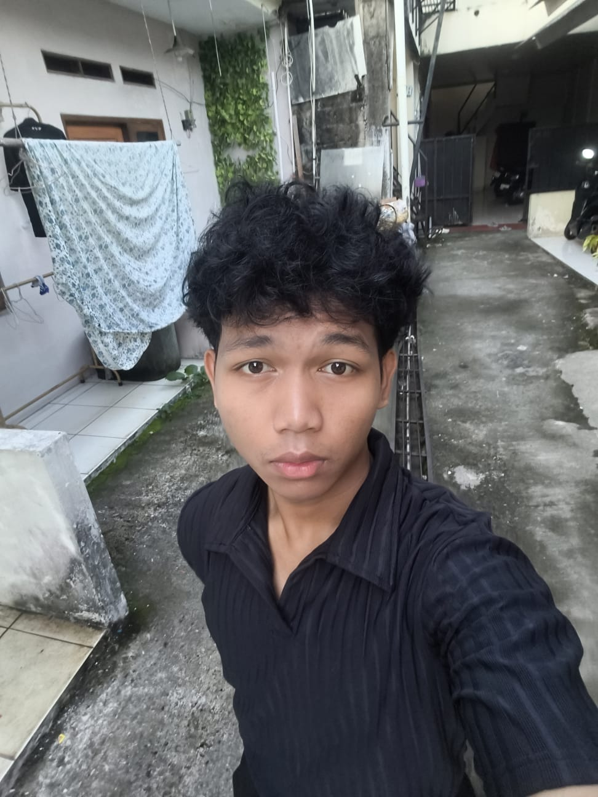

Get to know me better — who I am and where I'm headed.

Saya adalah seorang mahasiswa yang sedang fokus belajar programming dan bercita cita ingin menjadi seorang software engineer dan saya sedang membangun skill lewat project nyata dan konsisten improve diri setiap hari.